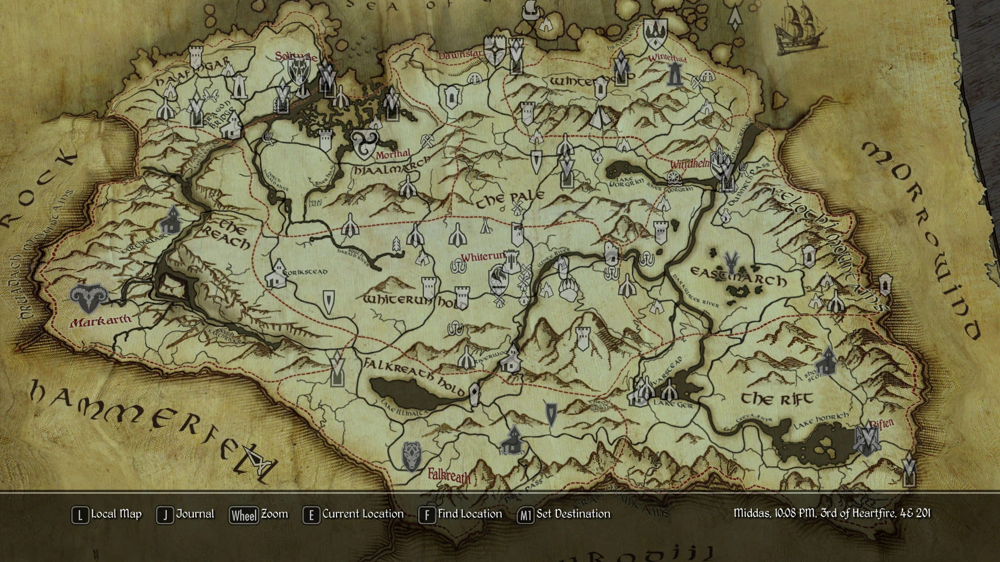

Map of Skyrim
This detailed map displays the main cities, towns, dungeons, ruins, shrines, and important locations across Skyrim. Use it to explore the world, plan your journeys, or locate guild headquarters and hidden secrets.

This detailed map displays the main cities, towns, dungeons, ruins, shrines, and important locations across Skyrim. Use it to explore the world, plan your journeys, or locate guild headquarters and hidden secrets.